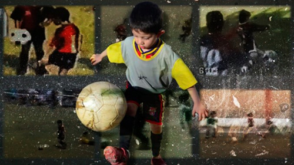

Real Chubut - Agencia de Noticias


Indio Cabral: el nene con la enfermedad de Messi que solo quiere jugar al fútbol

Es cordobés, tiene seis años y una formación ósea de un pequeño de dos. Soporta inyecciones costosas cada noche para crecer cinco centímetros por año. Dice que es hincha de Barcelona y de la Selección. Conocé la historia del nene que vence miedos y obstáculos para salir a la cancha y jugar como la Pulga, su ídolo.
Indio Cabral tiene 6 años y su sueño es jugar a la pelota como Messi. El nene, que padece un problema de crecimiento similar al de la Pulga, no detiene su anhelo y por eso demuestra desde la cancha del club Unión San Vicente cordobés que pese a todas las adversidades él también puede competir. La historia y la fuerza de Indio ya conmueven a todos.
Denise y Esteban, los padres de Indio, cuentan que su hijo siempre quiso jugar al fútbol. Incluso mucho antes que los seis años que ahora tiene. Sin embargo, la patología que padece por el déficit de hormonas de crecimiento se lo impidió durante un buen tiempo.
Pese a eso y con el correr de los años, los médicos de Indio señalaron que ya era hora de que pequeño comenzara a practicar algún tipo de deporte.
Al fin había llegado la noticia que tanto esperaba el niño de seis años. "Fútbol", le indicó Indio a sus padres sin pensarlo un solo segundo. Es que él quiere, como todos los nenes argentinos apasionados por la redonda, ser como Lionel, ese rosarino que soportó todo tipo tratamientos y supo sobrepasar cada obstáculo para convertirse en el mejor jugador del mundo.
Indio mide unos 1,15 metros y su edad ósea es de apenas 2 años y medio. La diferencia de altura con el resto de sus compañeros de la categoría 2009 es notoria y, por eso, sus padres tiemblan cada vez que sale al campo. Sin embargo, los miedos y prejuicios se disipan cuando el pequeño agarra la pelota.
"Cuando él nace, lo hace con fecha normal, peso normal y medidas normales.
Pero a los poquitos meses empieza con mucha diarrea. Por eso no aumentaba de peso ni crecía. Dimos vueltas por muchos especialistas y nadie daba en la tecla. Finalmente, en el Hospital de Niños me dicen que no era celíaco como pensaban otros doctores y me recomienda un endocrinólogo. Ahí damos con que tiene problemas de crecimiento. Llegaron a la conclusión que necesitaba un estimulante para la hormona de crecimiento. Le sale una edad ósea de dos años y cinco meses y el Indio tiene seis años", contó Denise el diario Día a Día.
Y amplió: "En el club no le hacen diferencia porque es más chiquito, lo reciben bien. 'Hola Indio, chau Indio', lo saludan todos... Lo tratan muy bien. Ya ha jugado seis, siete partidos en su categoría. Cuando entra a jugar nosotros tenemos miedo, pero él no. A él le gusta jugar, no tiene miedo a nada. Él dice que quiere ser como Messi. Cuando le preguntan de qué club es hincha no dice de Boca, de Belgrano o Talleres... Indio te dice que es de Barcelona y de Argentina, porque ahí juega su Messi".
Indio soporta cada noche una inyección que le da esperanzas de seguir creciendo. Sus médicos estiman que crecer entre cinco y seis centímetros por año con el tratamiento. Es un tratamiento duro y costoso, ya que cada inyección cuesta alrededor de 15 mil pesos.
"Lo que se le coloca es como una lapicera, una vez al día, siempre a la noche cuando se va a dormir. La lapicera le dura una semana justa. El Servicio Social del Hospital de Niños nos costea el tratamiento. Ahora estamos esperando desde Buenos Aires una respuesta, ya que hicimos los trámites en el Ministerio de Salud para responder si las cubrirán de aquí en adelante. Sino, lo pagaremos nosotros como se pueda", dijo su mamá.
Mientras, Indio sigue siendo un ejemplo de lucha. El nene pasa todo el tiempo libre que tiene con la pelota en sus pies. Va de un lado de la casa para el otro. No se cansa. Quiere ser como Lio.
Publicado por: Real Chubut - Agencia de Noticias 10-09-2016 Deportes